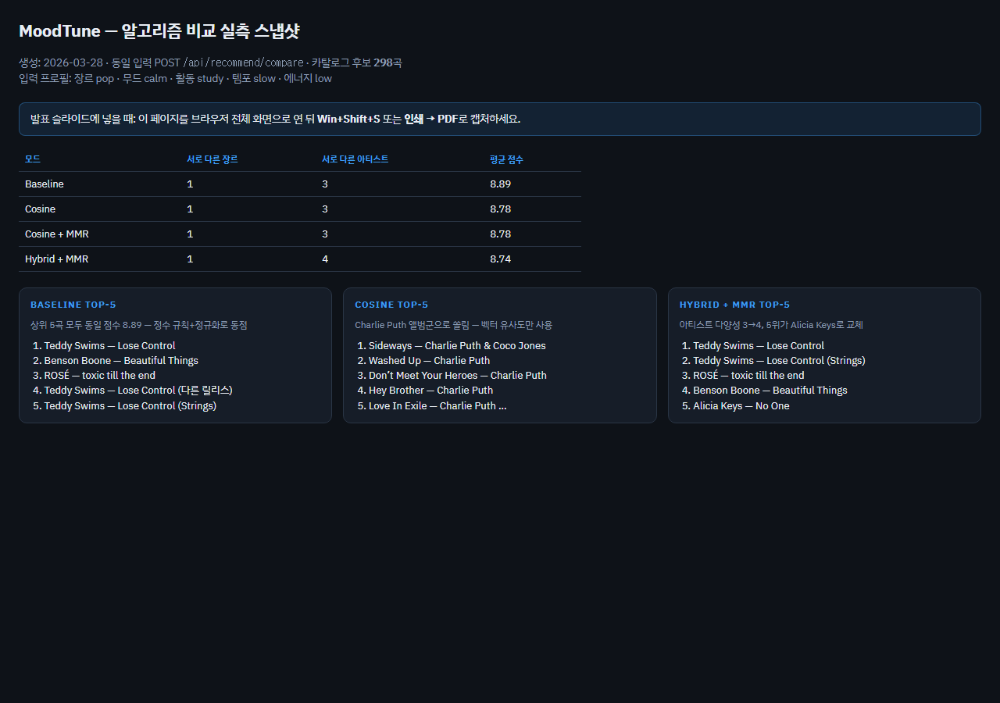

사용자 무드·상황·취향을 수집하고, 하이브리드 규칙·유사도·다양성 재정렬을 조합해 곡을 고릅니다. 발표용 요약 슬라이드입니다.
총 21장 · 조작: ← → 방향키 또는 하단 버튼 · 로컬 파일 열기 또는 /presentation.html
NormalizedUserProfile로 정규화 → (선택) Gemini로 서술 기반 태그 보강 → 프로필로 검색 쿼리 여러 개 생성 → iTunes로 곡 수집 → 곡마다 Last.fm 태그(가능 시) → 내부 Song으로 변환 후 점수화.
스택: Next.js(App Router) · Zustand · TypeScript. 추천 그래프: src/graph/recommendationGraph.ts · 공통 파이프라인: recommendationPipeline.ts
[브라우저]
QuestionPage → answers
LoadingPage → runRecommendationGraph(graphState)
│
├─► Gemini: enrichProfile (자유 서술) … 프로필 보강
├─► POST /api/catalog/songs { profile } … 서버에서 iTunes + Last.fm
│ └─► Song[] (id, title, artist, genre, bpm, moodTags, …)
└─► runFullScoringForMode(songs, profile, NEXT_PUBLIC_RECSYS_ALGO)
└─► toRecommendationItems → Top-5
└─► Gemini: generateReasons … 곡별 설명 문장 (일반 플로우)
[발표용 비교]
ComparePage → POST /api/recommend/compare { answers }
└─► 동일 카탈로그 1번 + 모드 4번 점수화 (LLM 이유 생략 가능)
users.json 가상 사용자, playlists.json 큐레이션. 곡 ID가 전부 숫자(iTunes)면 협업 부스트 스킵 — 로컬 데모 ID와 섞이지 않게 하기 위함.
NEXT_PUBLIC_GEMINI_API_KEY 등. 프로필 보강 + 추천 이유 문장. 순위 결정 알고리즘은 아님.
| 블록 | 역할 |
|---|---|
| 콘텐츠 (scoreSongs) | 장르·무드·활동 태그 매칭. 규칙 기반이라 발표 시 설명 용이. |
| 협업 부스트 | 가상 사용자 중 유사 이웃의 liked/skipped 반영. iTunes 숫자 ID 카탈로그에서는 미적용. |
| 플레이리스트 보정 | 큐레이션과 맞는 후보 가산. |
| 컨텍스트 | BPM 선호 구간, 운동/휴식, 에너지 일치, 로맨틱 태그 등. |
| 가중 합성 | 각 점수 축을 max로 정규화 후 0.5·0.3·0.2 (콘텐츠·협업·컨텍스트). |
| Cosine | 프로필·곡 희소 벡터 코사인 → finalScore 대체. |
| MMR | 상위 풀(예: 25곡)에서 λ·관련성·상호 유사도로 Top-5 선택. |
구현: src/domain/scoring/index.ts — 태그는 부분 문자열 매칭도 허용.
moodTags 중 프로필 moods와 겹치는 개수 × 2activityTags 중 프로필 activities와 겹치는 개수 × 2nc = content / max(content) · nCol = max(collab,0) / max(collab⁺) · nCtx = max(context,0) / max(context⁺)
blended = 0.5×nc + 0.3×nCol + 0.2×nCtx → finalScore = blended × 10
NEXT_PUBLIC_RECSYS_ALGO = baseline | cosine | cosine_mmr | hybrid_mmr · 변경 후 dev 서버 재시작
| 모드 | 강점 | 약점 / 주의 | 언제 쓰나 |
|---|---|---|---|
| Baseline | 해석 쉬움, 블록별 기여 설명 가능 | 정수 콘텐츠·정규화로 동점·근접 빈번 | 기본 시연, “왜 이 곡?” 슬라이드 |
| Cosine | 수식 명확, ML 입문 대비 | 특성이 비슷하면 유사도도 뭉침 | Baseline과의 정량·정성 비교 |
| + MMR | 비슷한 곡 연속 완화, 다양성 지표 설명 용이 | λ·풀 크기에 따라 순위 변동 | “다양성 vs 관련성” 트레이드오프 |
다음 슬라이드는 동일 프로젝트에서 실제 API를 호출해 얻은 스냅샷입니다. iTunes/Last.fm 결과는 시점마다 달라질 수 있습니다.
엔드포인트: POST /api/recommend/compare · 캡처일: 2026-03-28 · 카탈로그 후보: 298곡
입력 답변 (질문 ID → 값) genre → pop | mood → calm | activity → study tempo → slow | energy → low → 프로필: 장르 pop, 무드 calm, 공부, BPM 선호 [60,85], 에너지 2 → preferenceTags: calm, study, pop, slow_bpm, low_energy
재현: 저장소 scripts/compare-payload.json 동일 본문으로 요청. 스크린샷용 전용 페이지: /compare-snapshot.html
| 모드 | 서로 다른 장르 수 | 서로 다른 아티스트 수 | 평균 finalScore |
|---|---|---|---|
| Baseline | 1 | 3 | 8.89 |
| Cosine | 1 | 3 | 8.78 |
| Cosine + MMR | 1 | 3 | 8.78 |
| Hybrid + MMR | 1 | 4 | 8.74 |
해석: 장르는 모두 pop으로 동일 라벨이라 장르 다양성 지표는 1로 고정. 아티스트 수는 Hybrid+MMR에서만 4로 늘어, MMR이 같은 점수권에서도 서로 다른 가수를 끌어오는 효과가 수치로 드러남.
public/compare-snapshot.html을 Playwright로 캡처한 PNG입니다. 재생성: node scripts/snapshot-compare.mjs

직접 캡처: compare-snapshot.html 또는 앞 슬라이드의 experiment-snapshot.png 활용.
코드: alternativeAlgorithms.ts — applyCosineRanking, applyMmrRerank
비교 API: 동일 입력으로 4모드 결과만 빠르게 보려면 LLM 이유를 생략할 수 있음.
| 항목 | 설명 |
|---|---|
| 동일 조건 | 같은 답변·같은 카탈로그로 4모드 동시 계산 → 공정 비교. |
| 요약 표 | Top-5 기준 서로 다른 장르 수·아티스트 수·평균 점수 — 다양성 논의에 유리. |
| 마크다운 복사 | 표 + 곡 목록을 노션/구글 슬라이드 노트에 즉시 붙여넣기. |
| 경로 | UI: 결과 화면 「알고리즘 비교 (발표용)」 · API: POST /api/recommend/compare |
오프라인 정답 라벨이 없으면 NDCG 등은 생략하고, 위 항목만으로도 학부 수준 발표는 충분히 가능.
primaryGenreName 활용, 호출 동시 수 제한.질문으로 만든 프로필과 실시간 카탈로그 위에서 Baseline · Cosine · MMR 조합 4모드를 돌릴 수 있고, 발표용 화면으로 동일 입력 비교와 마크다운보내기까지 지원합니다. LLM은 순위가 아니라 보강·설명에 집중합니다.
감사합니다. Q&A 환영합니다.